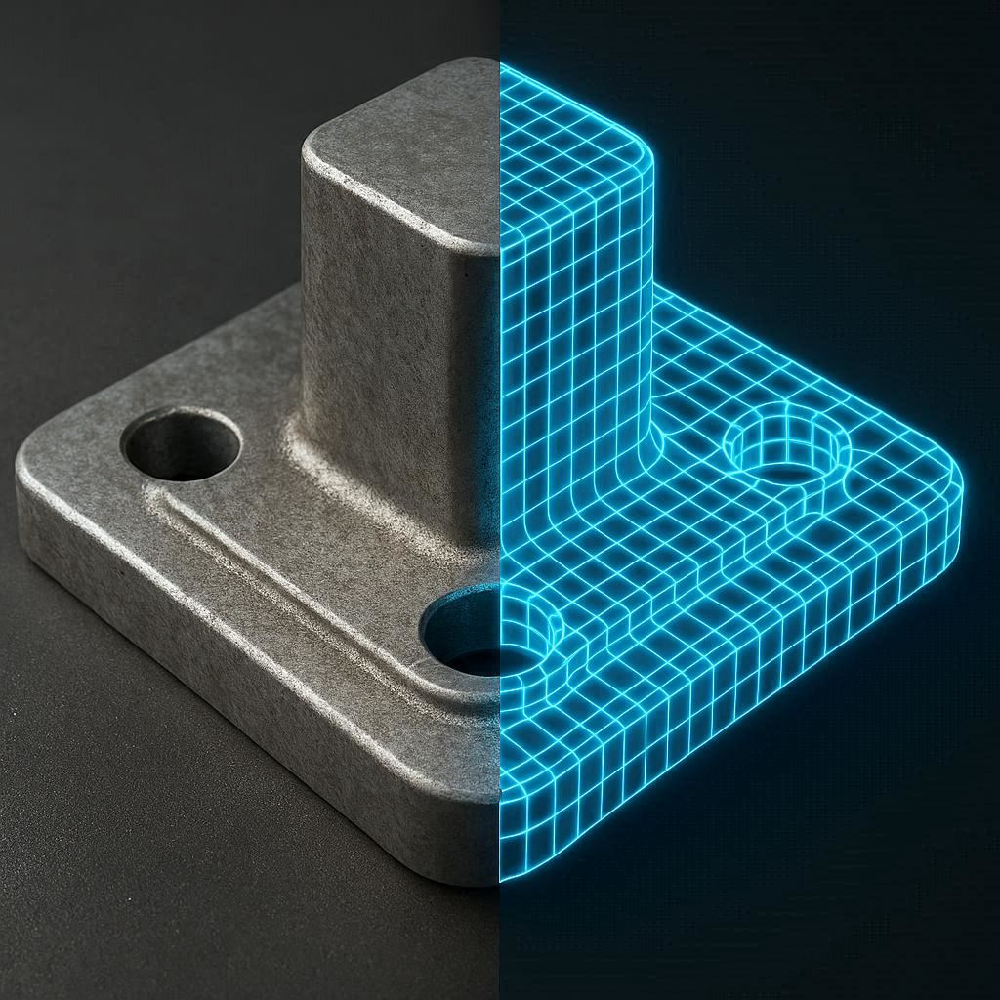
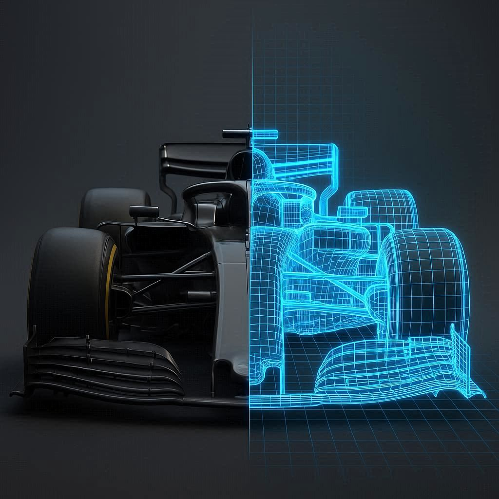
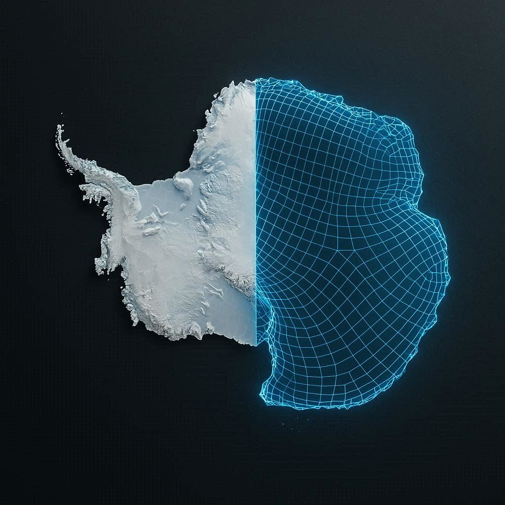

PyApprox | Faster, Defensible Delivery via Simulation & Data
Open-Source Python Toolkit
Accelerating Reliable Delivery Through Simulation and Data — Under Uncertainty
Predictions you can defend. Delivered faster.
Pushing performance while guaranteeing reliability demands expensive simulations and observational data. PyApprox gives engineers and scientists the mathematical tools to quantify uncertainty, focus resources where they matter most, and close the gap between ambitious targets and defensible results — faster.

Where Simulation Meets Reality
Many engineering domains have expensive simulations, uncertain parameters, and high-stakes decisions. PyApprox provides a unified mathematical framework to tackle them all.
Energy Systems
Reactor safety margins and grid reliability

Precision Manufacturing
Model calibration, stress prediction, and process optimization
Aerospace
Vehicle reliability and mission-critical predictions
Energy & Subsurface
Reservoir characterization, geothermal resource assessment, and subsurface uncertainty
Heavy Industry
Equipment fatigue prediction and operational risk
Robotics & Autonomous Systems
Digital twin calibration, sensor fusion, and sim-to-real transfer

Aerothermal
Surrogate-accelerated CFD for aerothermal and reentry simulations

Earth Science
Ice-sheet projections and national security impact assessment
What PyApprox Does
Accelerate design, certification, and delivery — with the confidence that comes from quantifying uncertainty.
Forward UQ
Propagate input distributions through your model to characterize output variability, estimate failure probabilities, and quantify prediction confidence.
Multifidelity Estimation
Combine cheap low-fidelity models with expensive high-fidelity simulations to achieve the same accuracy at a fraction of the computational cost.
Inverse UQ & Bayesian Inference
Calibrate model parameters from observed data using MCMC, variational inference, and amortized methods.
Experimental Design
Decide where to place sensors, which experiments to run, and how to allocate resources to maximize information gain.
Surrogate Modeling
Replace expensive simulations with polynomial chaos, sparse grid, Gaussian process, or operator learning approximations.
Sensitivity Analysis
Identify which input parameters drive your output variance using Sobol indices, Morris screening, and analytical methods.
Why PyApprox?
80+ Validated Tutorials
Every tutorial is executable, tested against analytical solutions where available, and designed to build intuition before diving into code.
Dual Backend: NumPy & PyTorch
Switch between NumPy for prototyping and PyTorch for GPU acceleration and automatic differentiation — same API, same results.
Use What You Need
Modular by design. Use a single capability — like surrogate modeling or sensitivity analysis — as a surgical fix, or connect the full pipeline from forward UQ through experimental design. Every module works standalone. Every module works together.
Open Source & Extensible
MIT licensed. Designed for researchers and engineers who need to customize, extend, and integrate UQ into their own workflows.
Created By
John D. Jakeman
Principal Member of Technical Staff · Sandia National Laboratories
John is a computational scientist specializing in uncertainty quantification, surrogate modeling, and optimal experimental design. He created and maintains PyApprox as part of his research at Sandia National Laboratories, where he develops methods for simulation-aided knowledge discovery, prediction, and design under uncertainty.
His work has been funded by DARPA, the U.S. Department of Energy Office of Science (ASCR), and Sandia’s Laboratory Directed Research and Development (LDRD) program.
Cite This Work
If you use PyApprox in your research, please cite the following paper.
J.D. Jakeman, “PyApprox: A software package for sensitivity analysis, Bayesian inference, optimal experimental design, and multi-fidelity uncertainty quantification and surrogate modeling,” Environmental Modelling & Software, vol. 170, p. 105825, 2023.
Ready to deliver faster — with uncertainty quantified?
Copyright 2019 National Technology & Engineering Solutions of Sandia, LLC (NTESS). Under the terms of Contract DE-NA0003525 with NTESS, the U.S. Government retains certain rights in this software.